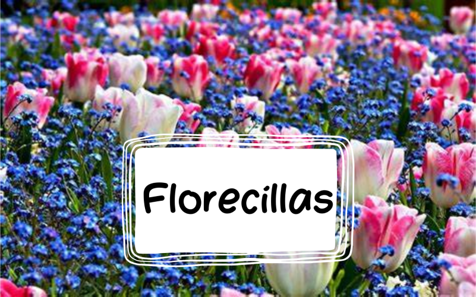

Introducción
Bienvenido a la página web oficial de 3ºE eso del colegio C.E.U San Pablo Montepríncipe. Esta página tiene como objetivo ayudar a toda la clase a que sobrelleve este curso lo mejor posible. Todos los apartados han sido creados cuidadosamente e incluyen mucha información que nos puede resultar útil. También están incluidos muchos soportes como vídeos y enlaces que nos pueden hacer algo más ameno el estudio. Por otro lado, tenemos otro sector dónde podremos comunicarnos a través de un chat, con la finalidad de que cualquiera que tenga una pregunta pueda formularla para que otro compañero que sepa la respuesta la responda por escrito. Además, hemos programado otra sección que a nuestro parecer es de mucha utilidad, la de poder avisar a los demás si alguien está en llamada o le gustaría estarlo. Con esto, podremos resolver dudas entre nosotros o hacer los deberes juntos a través de una llamada. También hay un apartado donde está incluida la foto del horario y del calendario de comedor. Y, por último, tenemos la sección más importante: un calendario dónde apuntar los próximos exámenes y los deberes. Y eso es todo, esperamos que os guste. Mini-poesía: Tus dudas serán resueltas y en tu cabeza dejarán de dar vueltas. Llamadas a montones para entender las funciones. Mates, lengua o inglés, en todo sacarás diez. |